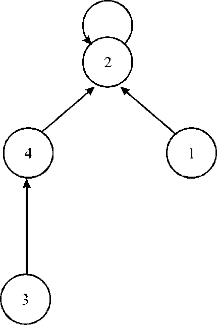

a.
In the initial step, consider a set of columns which is not linearly independent on.
Then there are some subsets of the above considered set of columns which are represented as S. The linear combination of the subset is 0.
However, over , there are only two elements 1 and 0. The linear combination is the sum over some of the subsets.
Consider this subset as , due to
linear dependence this set needs to be non-empty.
, due to
linear dependence this set needs to be non-empty.
Now, assume some set of edges which are corresponded by the columns.
Since, with each of the vertex 0 that belongs to, the columns had their total incidence, and it is even.
Therefore, if the graph taken under consideration is the subgraph constructed by the edges then the degree of all the vertices would be even.
Also, the set is
non-empty, some of the components has an edge.
Restricted to any of the such component.
Since, the above component consists of even vertices and are connected, it contains the Euler Circuit, and this is a cycle.
Now, assume that the graph that is being considered, consist of some subset of edges which are the cycles.
Then, the vertex corresponding to these set of edges has even degree, therefore, when the corresponding columns will be added, the result would be the 0 column in .
Since, the set of columns which are linearly independent, create a matroid by the problem 16.4-2.
The set of edges which are acyclic in nature create the matroid as well.
Hence, it is proved that the (E, I) of the part (a) is a matroid.
b.
The simplest way is to consider the edge of maximum weight that does not complete the cycle.
Also, the other way is to apply the Krushkal’s algorithm on the graph with negated edge weight.
c.
Consider the graph of [3] with the following edges:
(1, 2), (2, 1), (2, 3), (3, 2), (3, 1)
In this u and v represents the edge from u to v.
Consider the two set of edges which are acyclic in nature:
A = (1, 2), (2, 3)
B = (3, 1), (3, 2), (2, 1)
Now, add an edge in B-A to A, this will create a cycle.
Thus, the property of exchange is violated here.
d.
Assume that there is a graph which consist of a directed cycle which consist of the edges correspond to the columns S.
Then, since the vertex in this cycle has as exactly as many edges which are going out of this vertex as it is going into it.
The corresponding rows of each vertex will add up to zero.
Since, the number of edges going out of the vertex is negative and the incoming edges count is positive.
So, the result of summation of columns would be zero.
Therefore, they are not linearly independent.
e.
The given correspondence is wrong.
Since, it is not that if there is no directed cycle in the graph then the columns are linearly independent.
Therefore, there is no perfect correspondence between set of the acyclic edges and the set of the independent columns.
Scheduling variations
The algorithm that has deadlines and penalties in it, and executes unit processes is given below:
1. Make a set of all the unit time tasks.
2. Define the deadlines of all the tasks.
3. Define the penalties of all the tasks. The penalty has been applied when the task takes more than the completion time.
4. Now schedule the tasks in order of their monotonically increasing deadline.
5. For any task, if the slot before the task’s deadline is empty, then the task should be assigned.
6. If the slot is not empty, then the task is assigned to latest unfilled slot.
Consider the following table:
In the table given above, there are 7 tasks, these are represented by ai. The table also contains the deadlines and penalties or weights. The deadlines are represented by di and penalties are represented by pi.
By following the algorithm given above, the scheduling of all the tasks is as follow:
First take that task which has maximum penalty. In this example a1 has maximum penalty that is 35. Therefore put task a1 in 4th slot because its deadline is 4.
|
1 |
2 |
3 |
4 |
5 |
6 |
7 |
|
a 1 |
After putting a1 task, find task which has 2nd highest penalty. Task a2 has next highest penalty therefore put a2 in 2nd slot because its deadline is 2.
|
1 |
2 |
3 |
4 |
5 |
6 |
7 |
|
a 2 |
a 1 |
Now a3 task has next highest penalty and its deadline is 4 therefore it must be completed before 4th time slot. The time slot 4th is already occupied by the a4 task but 3rd time slot is empty so put a3 task at 3rd time slot. Similarly put a4 task at 1st empty slots because its deadline is 3.
|
1 |
2 |
3 |
4 |
5 |
6 |
7 |
|
a 4 |
a 2 |
a 3 |
a 1 |
Then out of a5, a6 and a7 tasks, a5 have highest penalty but deadline of a5 is 1. Therefore move to next highest penalty task that is a6. The deadline of a6 task is 4 which is also expired therefore finally move to last task that is a7 whose deadline is 6 therefore put the task a7 in slot 6.
|
1 |
2 |
3 |
4 |
5 |
6 |
7 |
|
a 4 |
a 2 |
a 3 |
a 1 |
a 7 |
Now, put task a5 and a6 on 5th and 7thempty slot in any fashion because both are already expired.
|
1 |
2 |
3 |
4 |
5 |
6 |
7 |
|
a 4 |
a 2 |
a 3 |
a 1 |
a 5 |
a 7 |
a 6 |
So, the order in which the tasks should be completed is as follow:
a 4 , a 2 , a 3 , a 1 , a 5 , a 7 and a6
Only task a5 and a6 are completed after the deadline therefore total penalty is the sum of penalty of these two tasks.
a. The algorithm given above always provides an optimal answer because the algorithm emphasis on the penalty of the task. It means that the task which has highest penalty will be considered first and put in the execution table before it is expired like a1 task in above example. Then consider the next highest penalty task. In this way, always tries to complete the tasks which has maximum penalty before its deadline. The order found above (a4, a2, a3, a1, a5, a7 and a6) using above mentioned algorithm is one of the optimal solutions which has minimum penalty 50 for that example. The above example may have different execution order but the penalty never become less than 50.
So, this algorithm will provides always optimal solution.
b. Consider the section 21.3 of the textbook,
A disjoint set of forest is the set of tree in which each node points to its parent node. In disjoint set of tree, each tree has its root node which acts as a representative for the tree.
The technique used in disjoint set of forest to increase the efficiency is union by rank. In this technique attach root of smaller tree to the root of bigger tree. The efficiency is depending on the depth of tree. If both tree have same depth then only it decrease the efficiency otherwise it always increase the efficiency.
In the example given above, the algorithm divides the tasks into two parts.
First part is comprised of tasks 2, 4, 1 and 3 and second part has the tasks 7, 5 and 6.
These tasks can be shown in graphical form as:

After making the disjoint-set of the two graphs given above, the final graph is as follow:
The running time of the implementation of the algorithm given above will be O(n2). It is because whenever any new process is entered in the slot, the comparison has been made with all the tasks.
As there are n number of tasks and when the n tasks are compared with all the n tasks, the running time becomes O(n2). It is because there is requirement of two “for” loops for tracing the tasks and to compare the tasks.
Cache memory
It is a small but expensive memory that lies between CPU and main memory. The main motive behind to add this memory is to reduce the data access time.
Whenever CPU requests for any data, the data is first searched in the cache memory. If it is found in the cache then data is returned from cache which is called as hit. If data is not found in the cache memory then that data is searched and returned from the main memory. It is known as miss. Whenever a miss occurred then that data is also updated in the cache memory, in order to reduce number of miss.
Off-line caching:
In Offline caching, it is already knows the sequence of request that is n and the size of cache that is k.
a. The method CACHE-MANAGER is a procedure of generic, which initializes a cache by calling INITIALIZE-CACHE. After this, call of ACCESS is made with each data element.
The inputs are entered in a sequence of memory
requests and a cache size .
.
CACHE-MANAGER
INITIALIZE-CACHE
for  to
to

ACCESS
CACHE–MANAGER’s running time depends on implementation of ACCESS. Now implement the greedy strategy described in the problem.
A straight forward way of implementing the greedy strategy is
that when processing request, for each
of the at most elements are
there in the cache, scanning of requests is there to
find elements in the cache which has access and is the next
access. After this, the element has been evicted.
As each scan takes  time, each
request entails
time, each
request entails  scans, and
there are n requests, the running time of this straight
forward approach is.
scans, and
there are n requests, the running time of this straight
forward approach is.
b. In order to show that the optimal sub-structure
is exhibited by the offline caching, define sub problem
before the th
request as an content of cache. In sub-problem  is a subset
(having maximum of k elements) of input data elements.
is a subset
(having maximum of k elements) of input data elements.
The solution of sub-problemis the sequence of decisions states that which elements removed out from the cache at each request of;
The optimal solution of sub-problemis the solution which has minimum number of cache miss. No other solution of sub-problemcan have less number of cache miss than optimal solution.
Suppose  is an
optimal solution of sub-problem andis a
sub-solution offor
requests.
is an
optimal solution of sub-problem andis a
sub-solution offor
requests.
The content of cache remains same, if cache hit at the ith request. If cache miss at the ith request means requested data not found in cache, then content of cache will change to by the ith request.
If is not an optimal solution to, then there must be another solution for problemthat has less number of cache misses as compared to.
As it already state that is a
sub-solution oftherefore
is
also a sub-solution of. When
sub-solution combine withat the
th
request, then the resultant solution obtained by combination can
have less number of cache misses than. This leads
to the contradiction of assumption that provides
optimal solution to means
having less number of cache miss.
Assume that the th request is responsible for a cache miss.
Considerbe the set
which contain all the cache states that can be accessed by
using
single decision manager of the cache.
The set have
 states:
of
them came from evicting one by one different elements of the cache
and one state came when no element is evicted.
states:
of
them came from evicting one by one different elements of the cache
and one state came when no element is evicted.
For example,
If a cache and the requested data element is, then a miss occur. The set Pc contains all the 4 sets which are as follow:
Considershows the minimum number of cache misses for problem. The recurrence state for is as follow:
Hence, the problem always exhibits the optimal structure.
c. Greedy choice property is taken into consideration for the proof of the furthest-in-future strategy. According to this, this strategy always gives an optimal solution.
Greedy choice property makes use of the optimal-substructure property to prove that the furthest-in-future always produces minimum number of cache misses.
Use various term in this part like sub-problem, solution and
optimal solution which is already define in previous part. Suppose
is
defined as a solution state of the cache for solution  just before
the th
request.
just before
the th
request.
The theorem given below is the key:
Greedy-choice Property:
Consideris an
optimal solution of problem
and is the
element in. At time of
th
request, next access is furthest access in the future, at
time
is the
element in. At time of
th
request, next access is furthest access in the future, at
time .
.
Then, define another solution of problemwhich has following properties:
1. On the th
request,
evicts.
2. For, the cachesandhas a difference of at most one element.
If difference is there, then element will be ionand is not in.
Equivalently, if and differ, this can be written as and, where is a size set and is some data element.
3. For requests, if
has
a cache hit, then has a cache
hit.
4. for.
5. For requests, missed
cache produced by is at most
the number of cache misses produced by.
The above theorem and the optimal-substructure property proved in part (b) imply that furthest-in-future always produces the less numbers of cache misses.